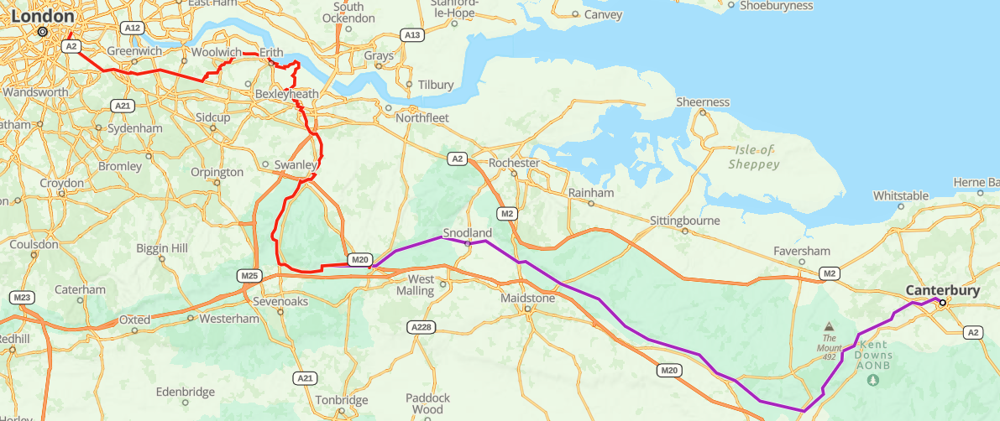
From September 2-18, 2022, I was in England on pilgrimage. From Sept. 4-9, I walked from London to the Cathedral in Canterbury, site of St. Thomas Becket's martyrdom (+1170) and former shrine. This route is the same one referred to in Geoffrey Chaucer's Canterbury Tales (~1390), and arrived at one of the three most popular pilgrim destinations in the Middle Ages (along with Rome and Santiago de Compostela in Spain). Like those other two pilgrim destinations, there are several routes you can take, but this one had the benefits of being easily completed in less than a week while traversing fascinating scenes of city and country. I had been planning the trip for nearly a year, and was surprised that, with all the turmoil with travel restrictions and the lingering threat of getting sick with Covid, I was actually able to complete it.
However, this pilgrimage had very little in common with my much longer walk to Santiago de Compostela in 2019. Though this route was much shorter, it was far more challenging. I don't mean challenging in the physical sense, though there were some muddy slogs, torrential rain, and barbed wire fences to climb (more on that later). It was challenging because it is a route that is not really marked and not well traveled, making its completion a real test of the will and, indeed, faith.
When you walk to Santiago de Compostela, for example, you look for yellow arrows that guide you on your route, and, especially as you cross into Spain from Portugal, you are rarely out of sight of other pilgrims who are walking the same direction that you are, sharing the same goal. In England, I didn't see a single other pilgrim on the entire route. In addition, there aren't any easy arrows to follow - in fact, there are rarely any indications at all that you are walking on a pilgrim route. Much of the path in the country follows various public access walking routes, but there are times where all you have is a faint mark of a path through a farmer's field or a horse pasture, with no sign to indicate where you should turn or where you should go. Parts of the route actually go along busy roads that require much vigilance, as your only space of safety when traffic approaches is to push yourself into the overgrowth and brambles that line the road (it's a longstanding complaint - a pilgrim writing in the 1930s said he was exasperated with throwing himself into the thorns to avoid the traffic).
It was one of these especially busy roads that made me think, "This is ridiculous - there is no possibility that this road is the correct route. Even though my GPS route shows this road is the way, I'm pushing my luck with how much traffic there is." I came upon a stile (more on these later) at a break in the hedge that led down a slope to a vineyard with a dirt path that went in the same direction as the road. "Yes," I said in relief, "this dirt path is the route." I followed it for a mile or so and came to a copse of woods and a low fence strung with barbed wire. It turns out I was supposed to stay on the road, but I had now trespassed onto some bloke's vineyard. I opted to carefully climb over the fence, and made my escape from any legal trouble.
So, this route was a real test of faith in the goal, and faith in one's ability to find a path and keep going, even when you got lost in the rain, even when you didn't see a single other soul who was sharing the same experience. I say "faith in the goal" because, when you arrive in Canterbury, St. Thomas Becket isn't even there. Henry VIII destroyed his shrine and his remains, and the church is no longer Catholic, so you are visiting a place that is a shell of its former glory, its martyred saint no longer in residence. Of course, his spirit permeates the air, but that, again, requires faith to believe that he lives forever with God.
After all this writing of the challenge of the pilgrimage, it was one of the most incredible and beautiful experiences of my life, and I am honored that I was granted the opportunity. Below I hope to share some of the sights and experiences with you, especially if you sent me prayer intentions to carry with me. You'll be able to see all the places those intentions traveled.
-Matthew
P.S. - there are many names given to the routes over the years, such as The Old Road, Canterbury Way, or Pilgrims' Way. The route I took is sometimes called "Becket Way", so that's what I named my pilgrimage.
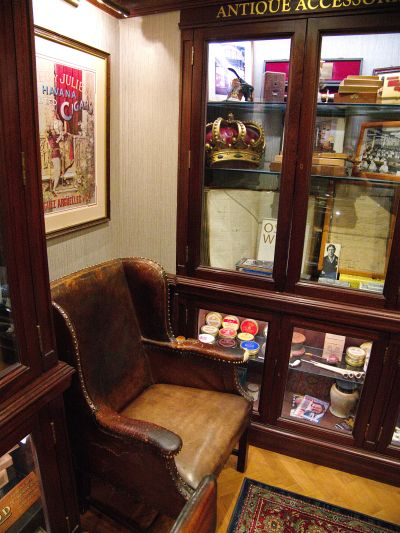 My first stop after checking into my hotel was a walk to the James J. Fox cigar store to buy a cigar for when I finished the route. It has long been the shop frequented by royalty and government officials, and was Sir Winston Churchill's cigar shop of choice for about 60 years. In the basement they have a small museum, including the leather chair Winston sat in while placing his orders. |
Doing
my best "jet-lagged Winston Churchill" impression in his
chair with my end-of-route cigar. |
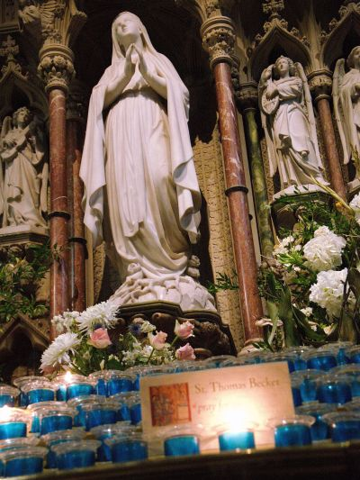
I
offered the pilgrimage to the first chapel of Our Lady
that I encountered - Church of the Immaculate Conception,
Mayfair (neighborhood in London) |
|---|---|---|
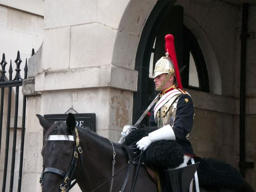 One of the famed Horse Guards. They had no idea at this time that, in less than a week, they would be called upon after Her Majesty's death to serve their nation in noble, sombre ways. |
At Trafalgar Square, I was spending time taking photographs
of the famed statue of Admiral Nelson atop his column. In
the distance, I heard the shouts and drums of an approaching
march. It turns out the main March for Life in London was
coming into the Square, so I was able to attend a
providentially arranged pro-life march. |
|
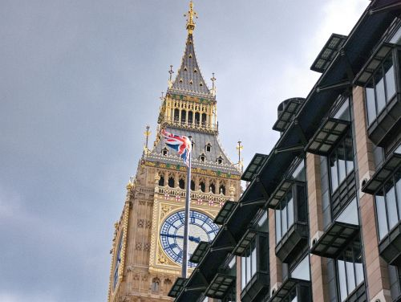
Of course, a shot of Big Ben. Near this shot, which was
outside a tube station, I heard a little girl scream,
"There's Big Ben!! We're in London!!" |
St.
Pancras Old Church. It is perhaps the oldest church in England. |
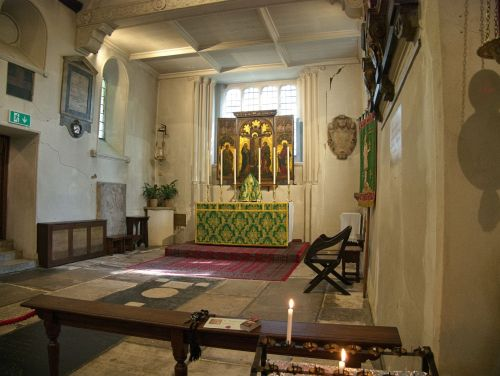 The
interior of St. Pancras Old Church (with your intentions). |
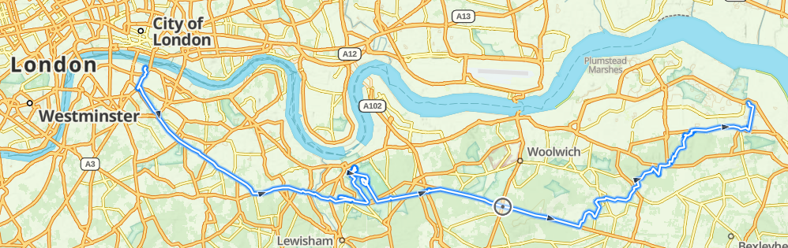
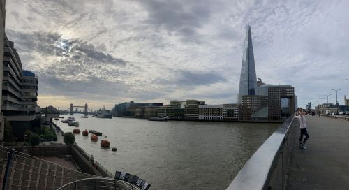
|
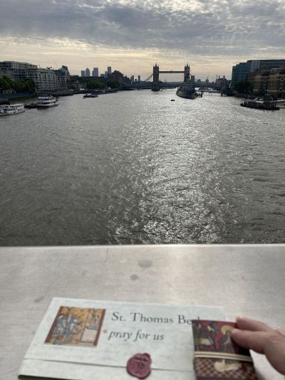
|
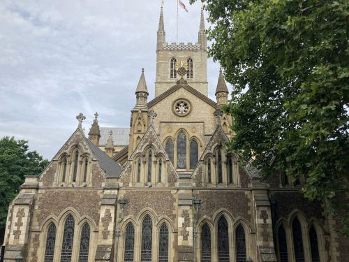
|
|---|---|---|
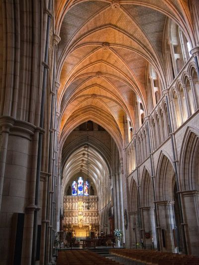
|
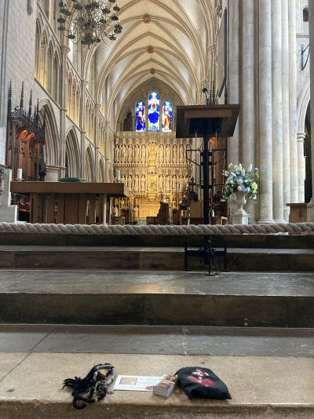
|
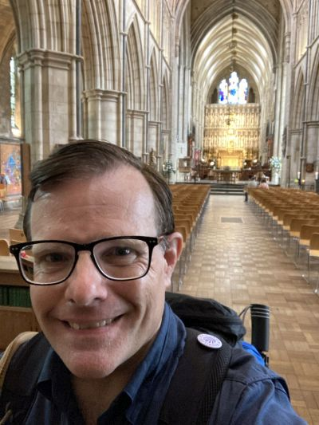
|
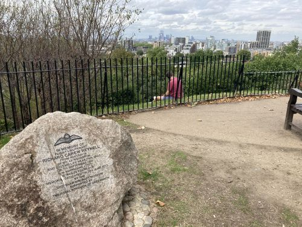
Point Hill in
Greenwich. In the far distance, hidden in the branches on
the righthand side of the bush, you can barely make out The
Shard skyscraper near my starting point. The memorial on the
left is one of many I will see on the route, as Kent was the
major location of the Battle of Britain. I even heard some
Spitfires fly overhead one day, as a local airport has
several available for tourist flights.
|
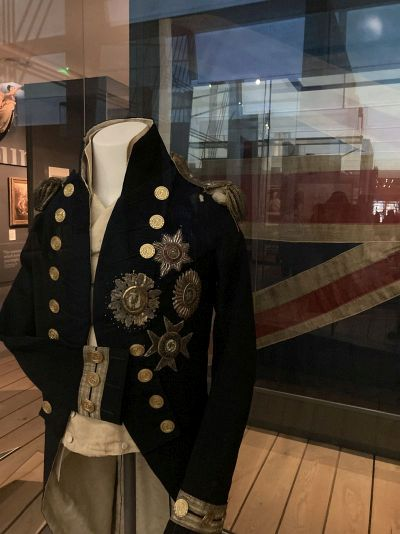
|
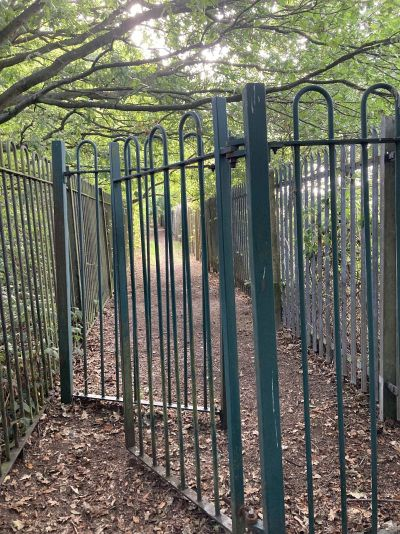
|
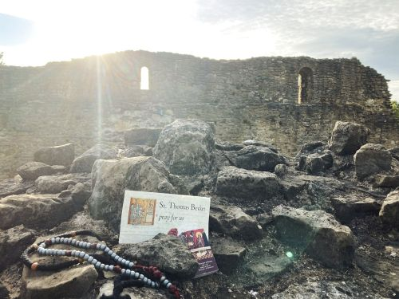
|
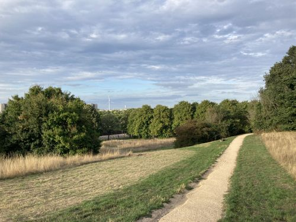
|
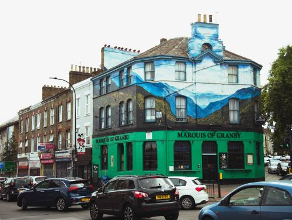
|